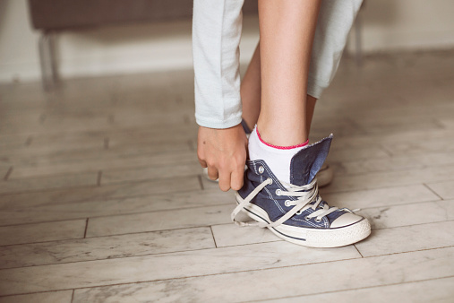
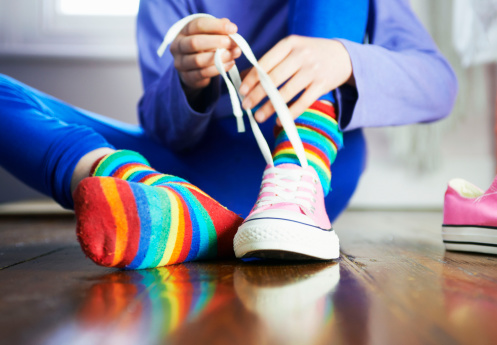
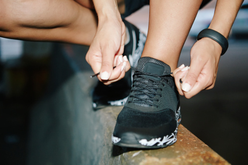
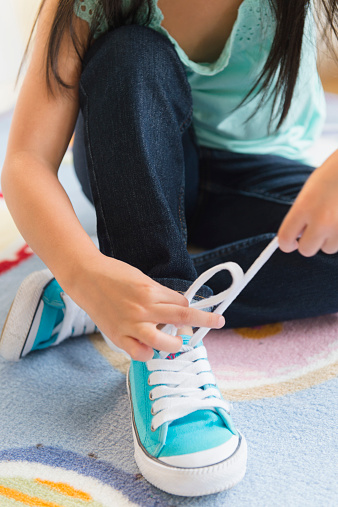
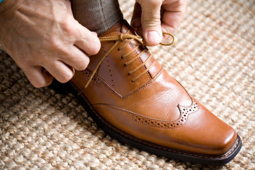

This is how you tie your shoes! Follow the steps using the forward and backwards buttons, or skip steps by clicking on the buttons above. If you keep practicing your shoe tying, you'll be running along in no time!
Slip on your shoes
Pull the strings tight
Loop the strings and pull
Make two bunny ears with the strings
Loop the ears and pull tight
